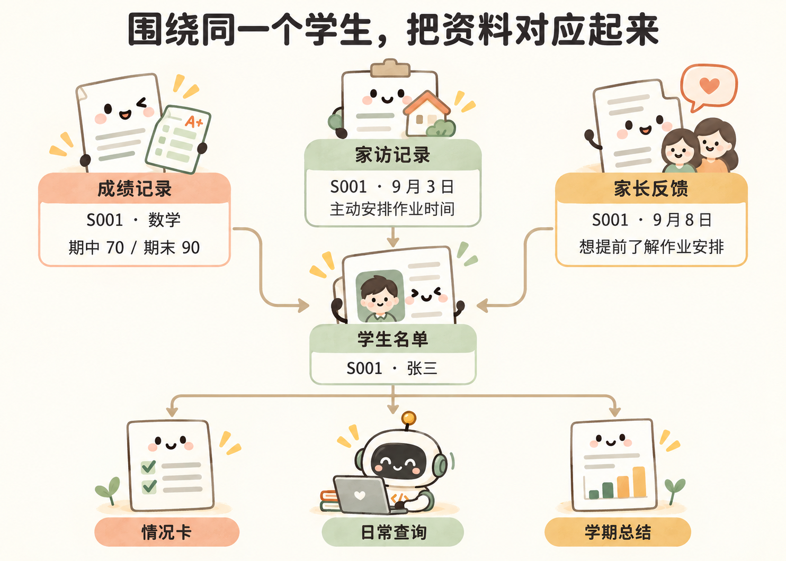

下次再做，怎样少重复交代
现有的文档、表格和记录，可以先一起交给 Agent。比如要根据家长反馈准备一份家长会报告，可以直接告诉它：
根据这个文件夹里的资料，帮我写一份家长会报告初稿。重点讲家长关心的问题，结合具体反馈说明，注明出处，方便我核对。读不到的文件、需要我补充的信息，单独告诉我。
拿到初稿后，就对着它修改：这部分太长，那条反馈理解错了，某个结论还缺依据。可以让 Agent 回头查原文、补内容、调整顺序，再整理成发言稿或 PPT，直到能用。
如果下个月还要做同类报告，最值得先保存的是这次已经确认的要求。比如先讲哪些问题、用什么口径统计、哪些内容不用放进报告，免得下次又从头交代。
可以让 Agent 在项目里写一份说明，把这些要求和最终报告一起留下来。下次交给它新资料时，让它先读这份说明，再按同样的要求做。
比如，可以继续告诉它：
把这次确认的报告结构、统计口径和修改要求记进项目说明，下次先读这份说明再做。需要计算和核对的地方也写清楚，原始资料和最终报告分别保留。
先这样继续用就行。如果反复遇到同一类整理和计算，再让 Agent 把这些步骤保存成脚本，或者把需要长期使用的信息整理成表。
遇到下面这些事，也可以直接把需求交给 Agent：
| 眼前的需要 | 可以交给 Agent 的任务 |
|---|---|
| 收到几十份作业，文件名很乱 | 按学号、姓名、科目批量命名，再分好文件夹 |
| 家长会需要介绍全班情况 | 把成绩统计、活动记录和照片整理成 PPT 初稿 |
| 经常翻找某个学生的资料 | 做一个查询页面，一起查看成绩、课堂表现和家访记录 |
简单的筛选、计算，用表格就能完成。如果经常要处理很多份文件，或者每次都要重复好几个步骤，再考虑让 Agent 做个工具。
用多维表保存和关联资料

如果只是做一次报告，让 Agent 根据现有文件整理就够了。后来需要经常查一个学生的历次成绩、家访和反馈，或者几位老师要一起维护记录，再考虑用多维表。
这部分整理也可以请 Agent 协助，不必自己逐条录入。比如把学生名单、成绩、家访和反馈分别整理成表，再关联到对应学生。确认整理无误后，打开张三的记录，就能查看他的历次成绩和相关记录。
连接好相应工具并授权后，也可以让 Agent 读取这些表，帮你整理情况卡或报告。开家长会、查学生记录、写学期总结，都可以用这份资料。
练习时使用虚构资料；处理真实资料时，确认使用环境和资料权限。
整理到什么程度，取决于实际怎么用。先把报告交付好，有长期查询或共同维护的需要，再把资料管理起来。